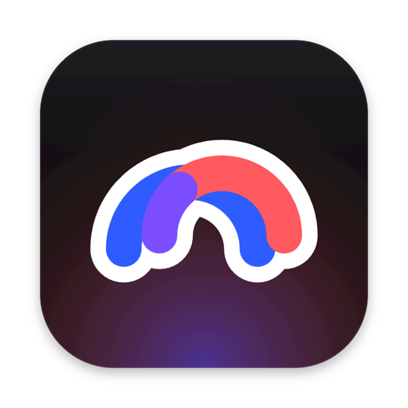

A browser for the Mac · free
Everything revolves around you.
Your tabs in a sidebar, your work in Spaces, every site the way you like it. Calm, complete and yours. Nothing you didn't ask for.
Your Spaces come too →Everything you need. Nothing you didn't ask for.
The sidebar, Spaces, the Command Bar, Split View and Boosts, built to be fast and to stay. Try the Command Bar: type a word.
Spaces
Work, home, school. Each with its colour, its tabs and its shortcut.
Command Bar
⌘T, a word, and you're there: any tab, site or action.
Split View
Two pages side by side, or up to four, in one tab.
Little Circa
A small window for a quick look, from anywhere on your Mac.
Boosts
Restyle any site: colours, fonts, the bits you'd rather hide.
Archive
Unpinned tabs get tidied after 12 hours. Nothing is lost.
Profiles
Separate logins and cookies for work and the rest of your life.
Passwords
Saved in your Mac's Keychain, filled in for you, never sent anywhere.
Bring your own AI.
Circa will use the AI you already have on your Mac: Codex with your ChatGPT plan, Claude Code with your Claude plan, and Apple’s on-device model for the small things. Ask from the Command Bar, keep talking in a side panel. Off until you turn it on, only on the page you choose. No new account, no second bill.
Bring everything over.
One button, about a minute. Your old browser stays exactly as it is, and nothing leaves your Mac.
- Open Circa.It finds your other browsers by itself.
- Click “Bring it over”.macOS asks once before your passwords come across, through the Keychain.
- Carry on.Your Spaces, pinned tabs, folders, profiles and logins are where your hands expect them.
Coming from Chrome or Safari? Circa brings those over too.
- Spaces4 · done
- Pinned tabs and folders96 · done
- Profiles2 · done
- Passwords, through Keychain412 · done
- History3 years · done

Your Spaces are waiting.
Free, for Mac. No account, no feed, no assistant you didn't ask for.
Download Circa for MacmacOS 15 Sequoia or later · Updates itself